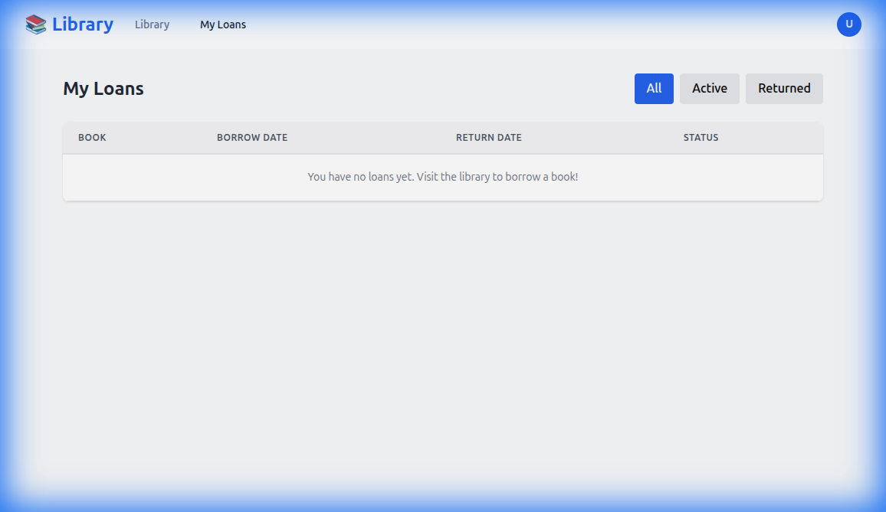
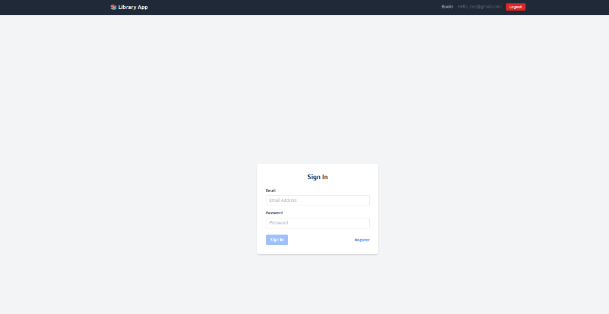
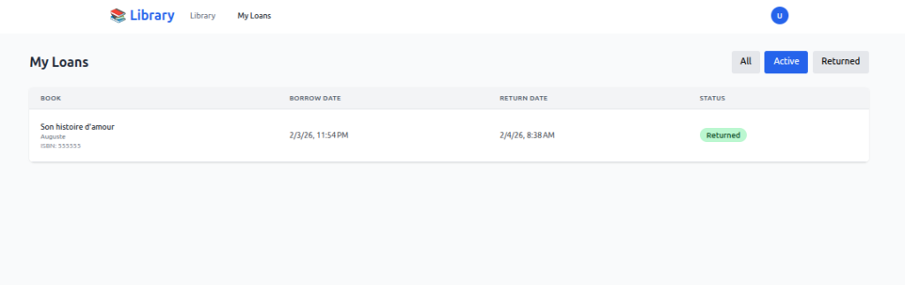
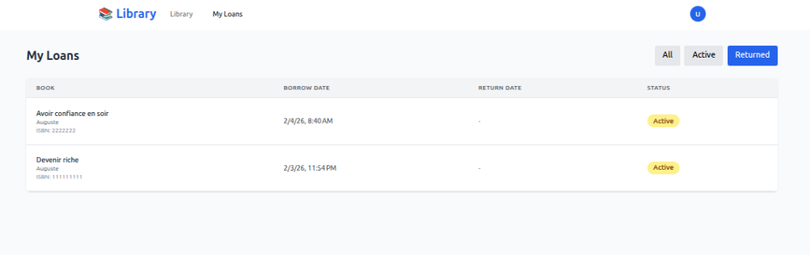
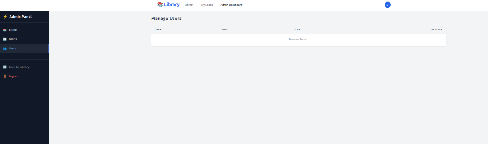
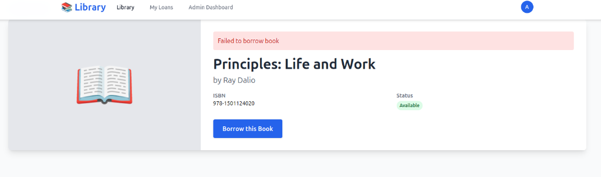

Library App - Implementation Walkthrough & Test Evidence
This document details the recent changes, features implemented, and provides visual evidence of testing (UI &
API/Swagger).
1. Reactive Search Implementation 🔍
Successfully implemented real-time reactive search/filtering for all tables in the application using RxJS
operators (debounceTime, distinctUntilChanged).
Features
- Book List & Admin Books: Server-side search with 300ms debounce.
- Admin Loans & Users: Client-side instant filtering with Computed Signals.

Demo: Reactive Search & Responsive Tables (WebP Animation)
2. Admin UI Enhancements 🛠️
Improved the Admin Dashboard with consistent tables, search bars, and error handling.
Admin Users: Error Handling & UI Check
3. User Features 👤
Enhanced the user experience for borrowing and managing loans.

My Loans: Desktop View
4. API & Swagger Verification 🧪
Evidence of API testing and Swagger UI verification, ensuring backend endpoints function correctly under various
scenarios (Auth, Admin roles, etc.).

API Documentation / Swagger UI Interaction

Endpoint Testing Verification

Response Verification

Auth Token Generation

API Schema Validation
5. Technical Implementation Details
Code Highlights
- Reactive Forms: Used `FormControl` with RxJS pipes.
- Signals: Leveraged Angular Signals for state management (`books`, `loans`, `users`).
- Components: Created reusable `DialogComponent` and `Navbar`.
Security
- HttpOnly Cookies: Implemented for JWT storage.
- Role-Based Access: Secured Admin endpoints.
- 429 Handling: Added Rate Limit handling page.